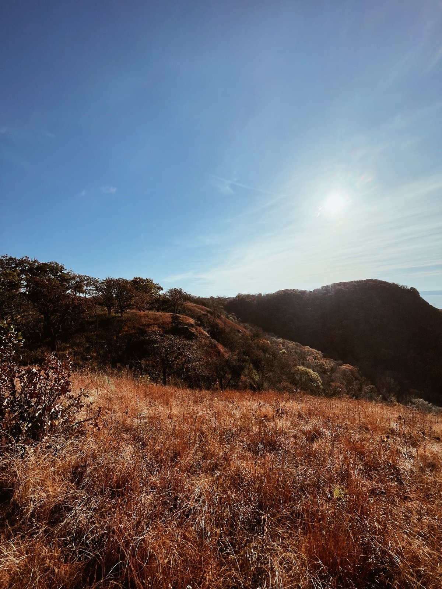
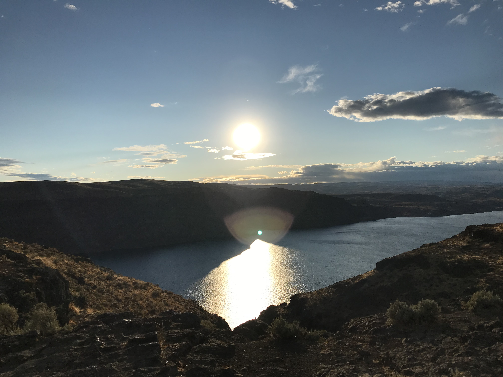
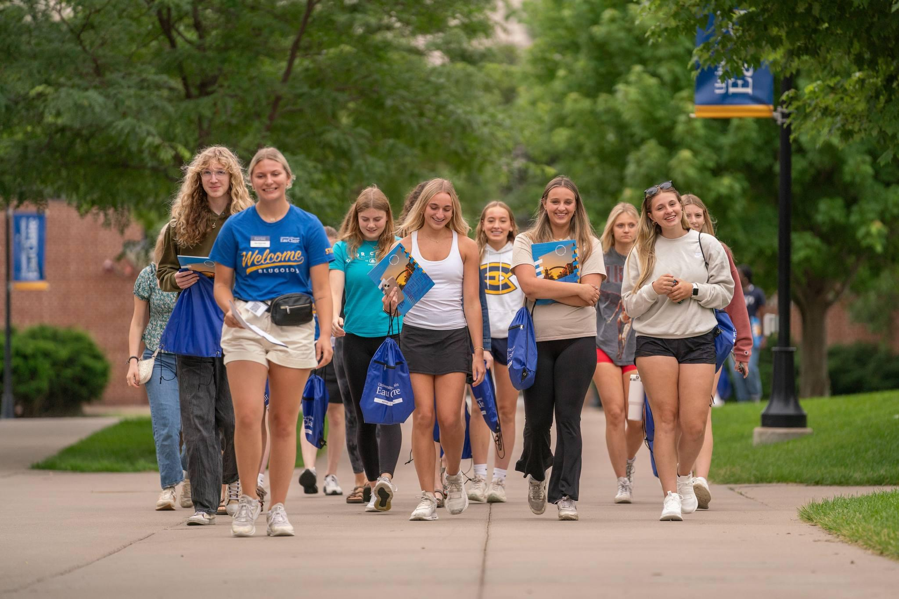
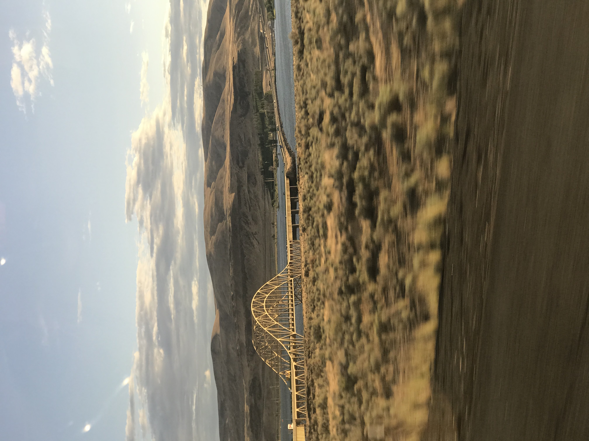
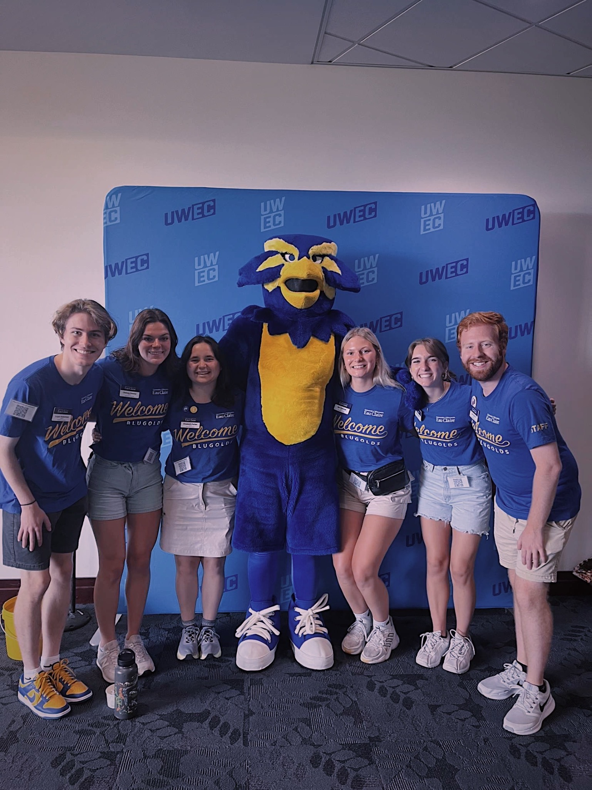
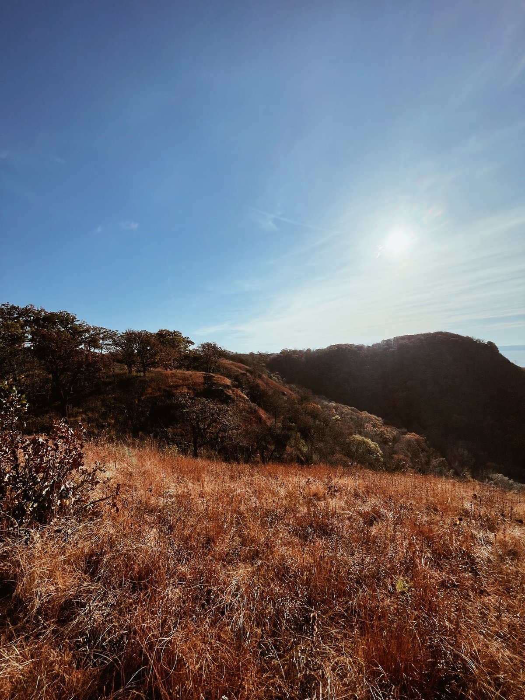
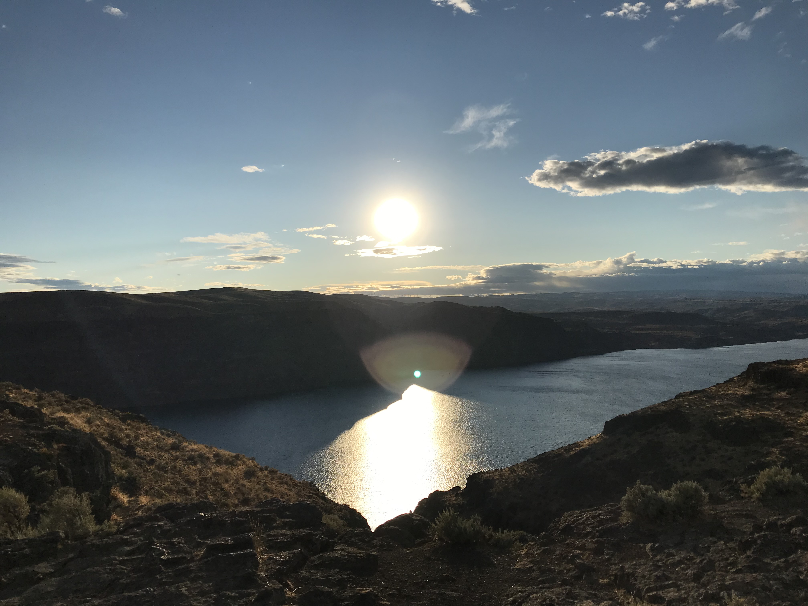
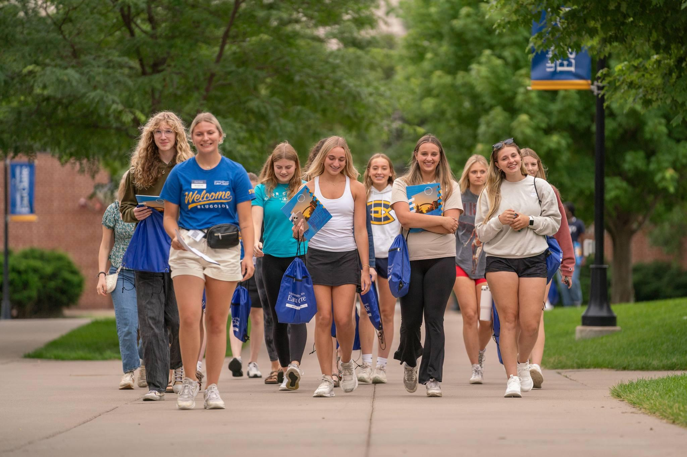
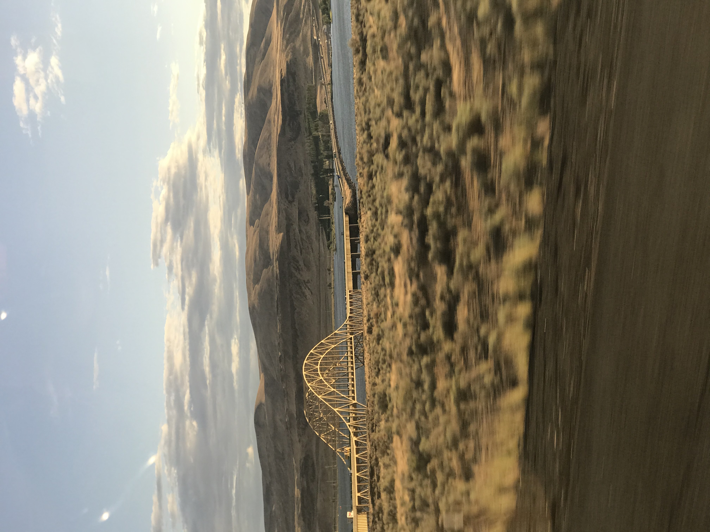
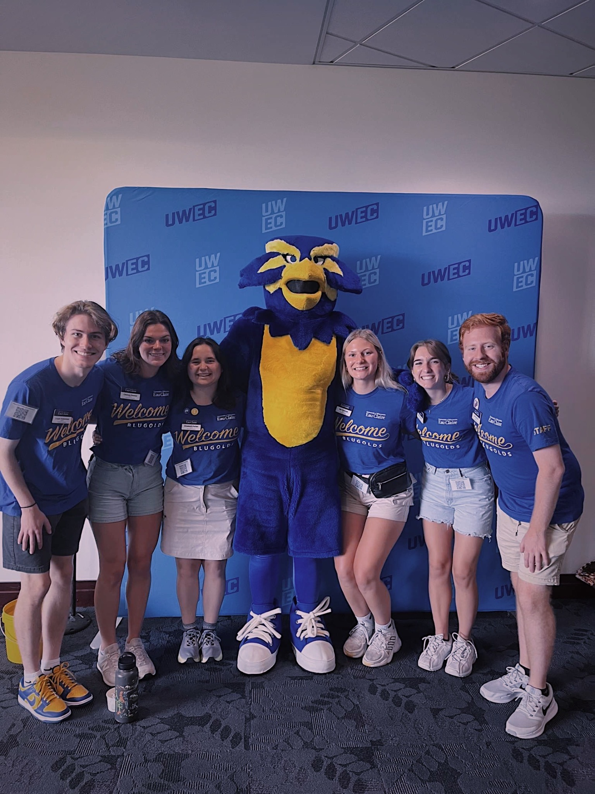

ABOUT ME
I grew up in the small town of Oakfield, WI, and I am currently in my second year at the University of Wisconsin - Eau Claire. Some of my passions include being outdoors/ taking pictures, spending time with friends and family, cooking, cleaning, and thrifting! Some of my biggest goals at the moment is to find an internship relative to my major, as well as to stay on track to graduate early.
SCHOOL INFORMATION
High School: Oakfield Middle and High School, Class of 2023, graduating class size: 36
College: UW-Eau Claire, second-year GeoSpatial Analysis and Tech
ACHIEVEMENTS
- Passing all “Promise Shops” - evaluation of customer service skills at Pick ‘n Save
- Made the High Honor Roll all four years of high school
- Made the Dean’s List at UWEC for both completed semesters so far
- Passed trainings at UWEC: Information Security Awareness, Mandated Reporter, completed EDI Tier 2
JOB HISTORY
- Courtesy Clerk, Cashier, Self Check-Out Attendent: Pick ‘n Save Fond Du Lac, WI... February 2020 - January 2024
- Sanitation Technician: PitStop (Dean Enterprises) - Fond Du Lac, WI... July 2022 - present
- Custodial Assistant: UWEC Employment - Eau Claire, WI... March 2024 - May 2024
- Orientation Assistant/ Welcome Leader: UWEC Employment - Eau Calire, WI... May 2024 - September 2024
- Receptionist: Grazie Salon - Eau Claire, WI... August 2024 - present
 








